LabVIEW VI Comparison Report
07:07:06 10/29/2026
First VI: /workspace-base/src/user.lib/_NEVSTOP/Communicable State Machine(CSM)/addons/Logger/_Support/List Rules as Strings.viSecond VI: /workspace/src/user.lib/_NEVSTOP/Communicable State Machine(CSM)/addons/Logger/_Support/List Rules as Strings.vi
| Front Panel Overview | ||
|
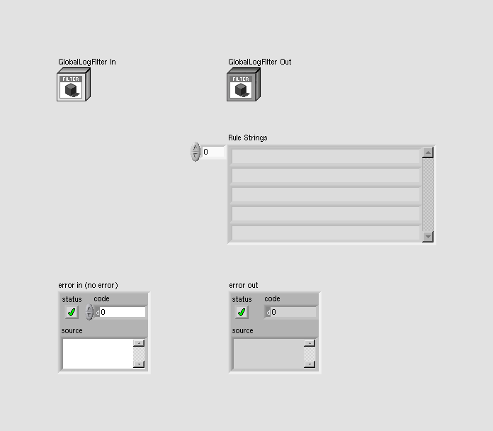 |

| |
| Block Diagram Overview | ||
|
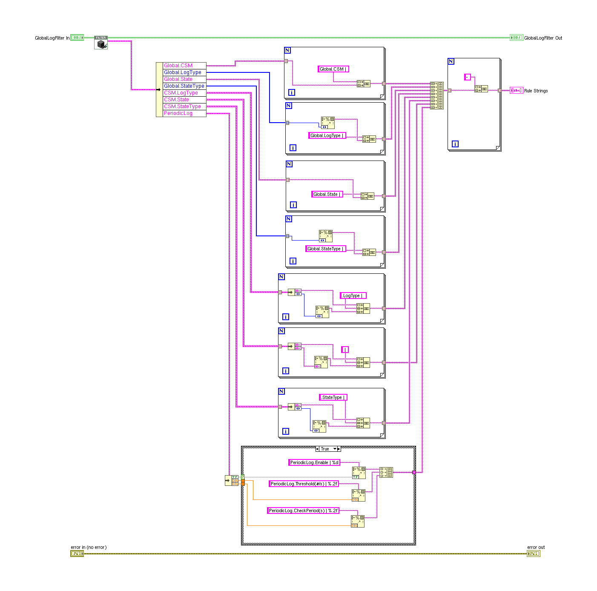 |
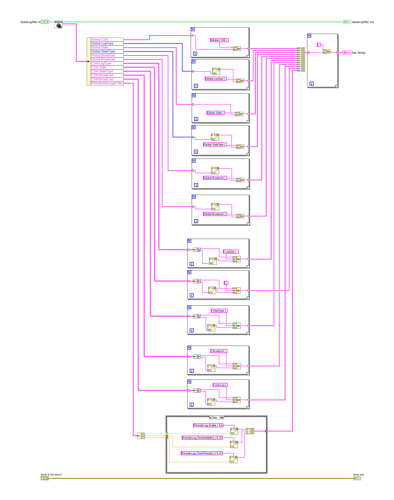 |
- Front Panel
- Front Panel Position/Size
- Block Diagram Functional
- Block Diagram Cosmetic
- VI Attribute
Detailed Information
1. Block Diagram objects
| /workspace-base/src/user.lib/_NEVSTOP/Communicable State Machine(CSM)/addons/Logger/_Support/List Rules as Strings.vi | /workspace/src/user.lib/_NEVSTOP/Communicable State Machine(CSM)/addons/Logger/_Support/List Rules as Strings.vi | |
|
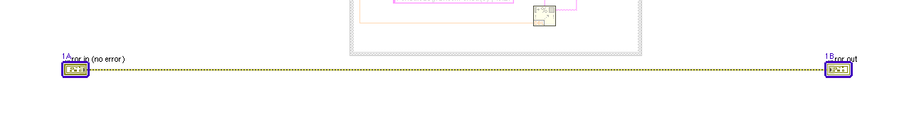 |
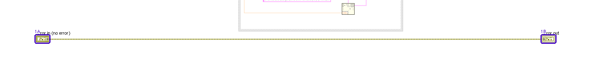 |
- Front Panel Terminal "error in (no error)" - moved : changed from "(137,1679)" to "(137,2312)"
- Front Panel Terminal "error out" - moved : changed from "(1209,1679)" to "(1400,2312)"
2. Block Diagram objects
| /workspace-base/src/user.lib/_NEVSTOP/Communicable State Machine(CSM)/addons/Logger/_Support/List Rules as Strings.vi | /workspace/src/user.lib/_NEVSTOP/Communicable State Machine(CSM)/addons/Logger/_Support/List Rules as Strings.vi | |
|
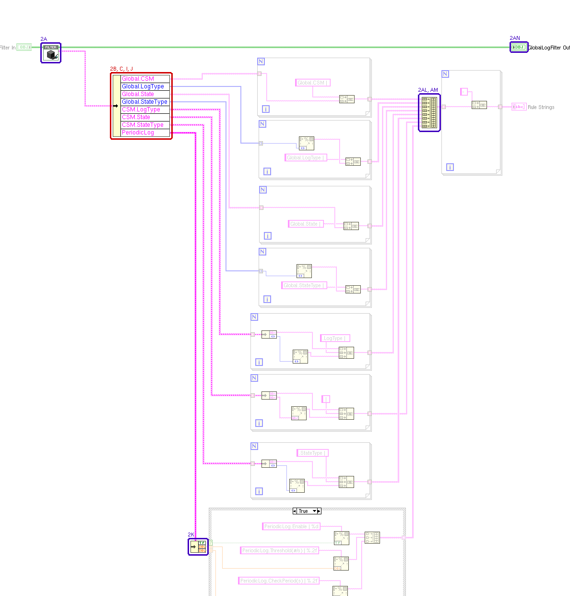 |
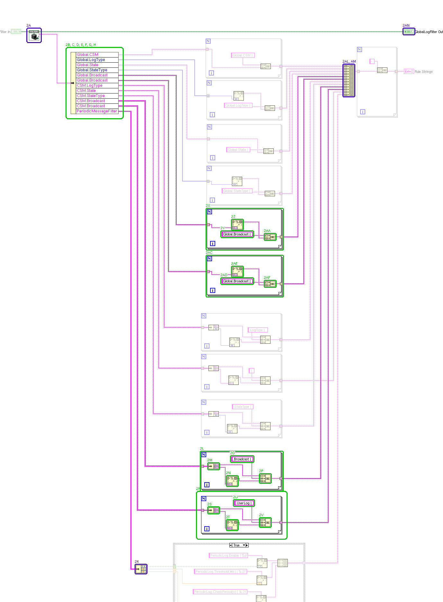 |
- SubVI "Communicable State Machine.lvlib:LogFilter.lvclass:Read Rules.vi" - reentrant VI : changed from "reentrant" to "non-reentrant"
- Unbundle By Name - number of elements : changed from "8" to "12"
- Unbundle By Name - moved : changed from "(338,533)" to "(323,539)"
- Unbundle By Name - element 4 added : "Global.Broadcast"
- Unbundle By Name - element 5 added : "Global.Broadcast"
- Unbundle By Name - element 9 added : "CSM.Broadcast"
- Unbundle By Name - element 10 added : "CSM.Broadcast"
- Unbundle By Name - element 11 added : "PeriodicMessageFilter"
- Unbundle By Name - element 4 moved : "CSM.LogType"
- Unbundle By Name - element 7 deleted : "PeriodicLog"
- Unbundle - moved : changed from "(500,1503)" to "(526,2136)"
- For Loop - added at (729,1784)
- Unbundle - added at (752,1820)
- Format Into String - added at (810,1860)
- String Constant "string" - added at (823,1798)
- Concatenate Strings - added at (913,1854)
- Loop Tunnel - added at (729,1824)
- For Loop - added at (729,1921)
- Unbundle - added at (752,1957)
- Format Into String - added at (810,1997)
- String Constant "string" - added at (832,1935)
- Concatenate Strings - added at (913,1991)
- Loop Tunnel - added at (729,1961)
- For Loop - added at (747,1028)
- String Constant "string" - added at (793,1098)
- Format Into String - added at (826,1062)
- Concatenate Strings - added at (928,1106)
- Loop Tunnel - added at (747,1072)
- For Loop - added at (747,1174)
- String Constant "string" - added at (793,1244)
- Format Into String - added at (826,1208)
- Concatenate Strings - added at (928,1252)
- Loop Tunnel - added at (747,1218)
- Loop Tunnel - added at (973,1862)
- Loop Tunnel - added at (973,1999)
- Loop Tunnel - added at (974,1110)
- Loop Tunnel - added at (974,1256)
- Build Array - number of terminals : changed from "9" to "13"
- Build Array - moved : changed from "(982,579)" to "(1173,579)"
- Front Panel Terminal "GlobalLogFilter Out" - moved : changed from "(1169,467)" to "(1360,467)"
- wiring changes
3. Block Diagram objects
| /workspace-base/src/user.lib/_NEVSTOP/Communicable State Machine(CSM)/addons/Logger/_Support/List Rules as Strings.vi | /workspace/src/user.lib/_NEVSTOP/Communicable State Machine(CSM)/addons/Logger/_Support/List Rules as Strings.vi | |
|
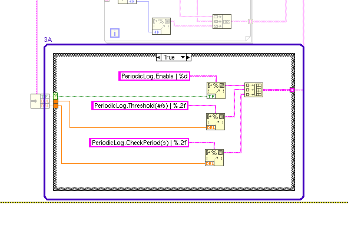 |
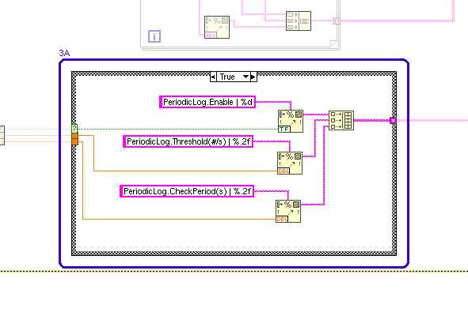 |
- Case Structure - moved : changed from "(538,1434)" to "(642,2067)"
4. Block Diagram objects
| /workspace-base/src/user.lib/_NEVSTOP/Communicable State Machine(CSM)/addons/Logger/_Support/List Rules as Strings.vi | /workspace/src/user.lib/_NEVSTOP/Communicable State Machine(CSM)/addons/Logger/_Support/List Rules as Strings.vi | |
|
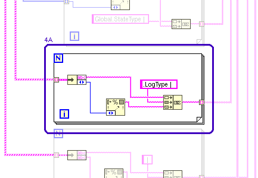 |
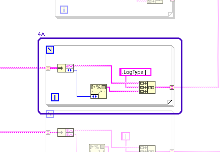 |
- For Loop - moved : changed from "(625,1029)" to "(729,1352)"
5. Block Diagram objects
| /workspace-base/src/user.lib/_NEVSTOP/Communicable State Machine(CSM)/addons/Logger/_Support/List Rules as Strings.vi | /workspace/src/user.lib/_NEVSTOP/Communicable State Machine(CSM)/addons/Logger/_Support/List Rules as Strings.vi | |
|
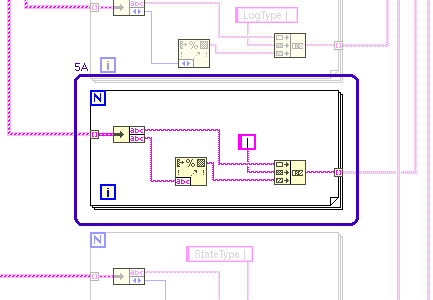 |
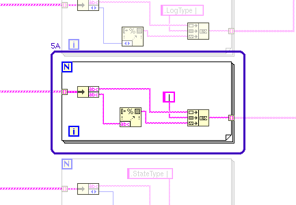 |
- For Loop - moved : changed from "(625,1156)" to "(729,1479)"
6. Block Diagram objects
| /workspace-base/src/user.lib/_NEVSTOP/Communicable State Machine(CSM)/addons/Logger/_Support/List Rules as Strings.vi | /workspace/src/user.lib/_NEVSTOP/Communicable State Machine(CSM)/addons/Logger/_Support/List Rules as Strings.vi | |
|
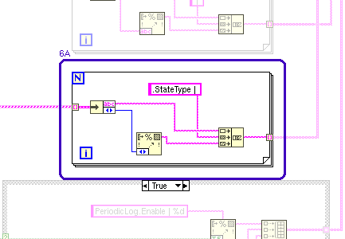 |
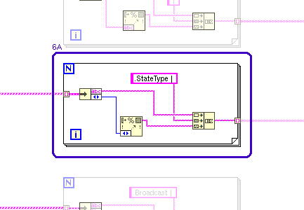 |
- For Loop - moved : changed from "(625,1298)" to "(729,1621)"
7. Block Diagram objects
| /workspace-base/src/user.lib/_NEVSTOP/Communicable State Machine(CSM)/addons/Logger/_Support/List Rules as Strings.vi | /workspace/src/user.lib/_NEVSTOP/Communicable State Machine(CSM)/addons/Logger/_Support/List Rules as Strings.vi | |
|
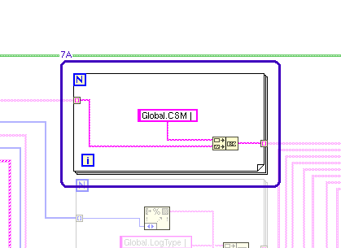 |
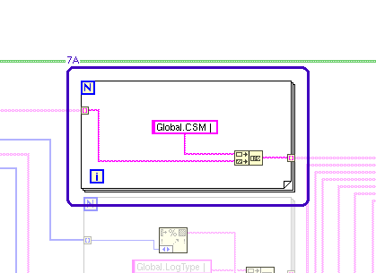 |
- For Loop - moved : changed from "(639,497)" to "(743,497)"
8. Block Diagram objects
| /workspace-base/src/user.lib/_NEVSTOP/Communicable State Machine(CSM)/addons/Logger/_Support/List Rules as Strings.vi | /workspace/src/user.lib/_NEVSTOP/Communicable State Machine(CSM)/addons/Logger/_Support/List Rules as Strings.vi | |
|
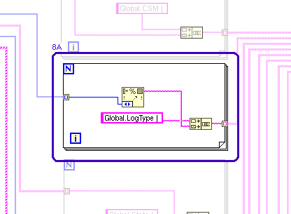 |
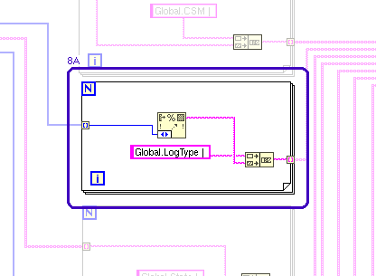 |
- For Loop - moved : changed from "(642,627)" to "(746,627)"
9. Block Diagram objects
| /workspace-base/src/user.lib/_NEVSTOP/Communicable State Machine(CSM)/addons/Logger/_Support/List Rules as Strings.vi | /workspace/src/user.lib/_NEVSTOP/Communicable State Machine(CSM)/addons/Logger/_Support/List Rules as Strings.vi | |
|
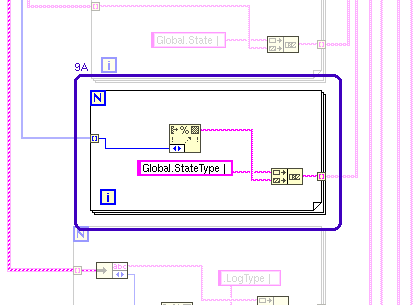 |
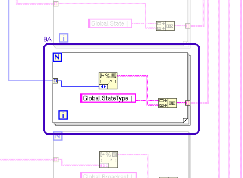 |
- For Loop - moved : changed from "(642,893)" to "(746,893)"
10. Block Diagram objects
| /workspace-base/src/user.lib/_NEVSTOP/Communicable State Machine(CSM)/addons/Logger/_Support/List Rules as Strings.vi | /workspace/src/user.lib/_NEVSTOP/Communicable State Machine(CSM)/addons/Logger/_Support/List Rules as Strings.vi | |
|
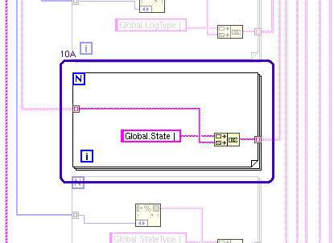 |
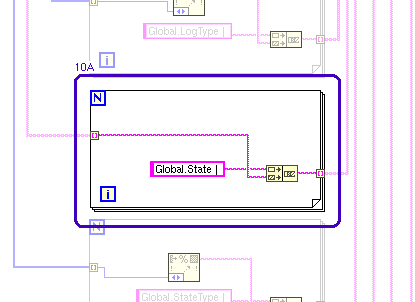 |
- For Loop - moved : changed from "(643,764)" to "(747,764)"
11. Block Diagram objects
| /workspace-base/src/user.lib/_NEVSTOP/Communicable State Machine(CSM)/addons/Logger/_Support/List Rules as Strings.vi | /workspace/src/user.lib/_NEVSTOP/Communicable State Machine(CSM)/addons/Logger/_Support/List Rules as Strings.vi | |
|
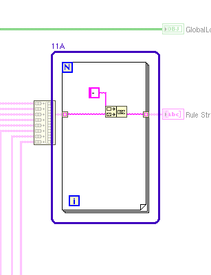 |
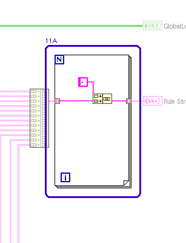 |
- For Loop - moved : changed from "(1023,523)" to "(1214,523)"
12. Block Diagram objects
| /workspace-base/src/user.lib/_NEVSTOP/Communicable State Machine(CSM)/addons/Logger/_Support/List Rules as Strings.vi | /workspace/src/user.lib/_NEVSTOP/Communicable State Machine(CSM)/addons/Logger/_Support/List Rules as Strings.vi | |
|
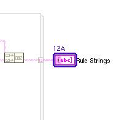 |

|
- Front Panel Terminal "Rule Strings" - moved : changed from "(1169,591)" to "(1360,591)"
13. Front Panel - LabVIEW Object
| /workspace-base/src/user.lib/_NEVSTOP/Communicable State Machine(CSM)/addons/Logger/_Support/List Rules as Strings.vi | /workspace/src/user.lib/_NEVSTOP/Communicable State Machine(CSM)/addons/Logger/_Support/List Rules as Strings.vi | |

|
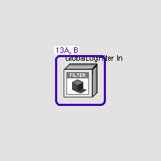 |
- LabVIEW Object "GlobalLogFilter In" - data value : changed from "(Communicable State Machine.lvlib:LogFilter.lvclass: {Rules => {Global => {CSM => [], LogType => [], State => [], StateType => []}, CSM => {LogType => [], State => [], StateType => []}, PeriodicLog => {Enable => True, Threshold(#/s) => 2.000E+0, CheckPeriod(s) => 1.000E+0}}, Cache => {Global => {CSM => [], State => []}, CSM => {LogTypeMap => <Variant\n: Empty>, StateMap => <Variant\n: Empty>, StateTypeMap => <Variant\n: Empty>}}})" to "(Communicable State Machine.lvlib:LogFilter.lvclass: {Rules => {Global => {CSM => [], LogType => [], State => [], StateType => [], Broadcast => [], UserLog => []}, CSM => {LogType => [], State => [], StateType => [], Broadcast => [], UserLog => []}, PeriodicMessageFilter => {Enable => True, Threshold(#/s) => 2.000E+0, CheckPeriod(s) => 1.000E+0}}, Cache => {Global => {CSM(lower) => [], State(lower) => [], Broadcast(lower) => [], UserLog(lower) => []}, CSM => {LogTypeMap => <Variant\n: Empty>, StateMap => <Variant\n: Empty>, StateTypeMap => <Variant\n: Empty>, BroadcastMap => <Variant\n: Empty>, UserLogMap => <Variant\n: Empty>}}})"
- LabVIEW Object "GlobalLogFilter In" - default data value : changed from "(Communicable State Machine.lvlib:LogFilter.lvclass: {Rules => {Global => {CSM => [], LogType => [], State => [], StateType => []}, CSM => {LogType => [], State => [], StateType => []}, PeriodicLog => {Enable => True, Threshold(#/s) => 2.000E+0, CheckPeriod(s) => 1.000E+0}}, Cache => {Global => {CSM => [], State => []}, CSM => {LogTypeMap => <Variant\n: Empty>, StateMap => <Variant\n: Empty>, StateTypeMap => <Variant\n: Empty>}}})" to "(Communicable State Machine.lvlib:LogFilter.lvclass: {Rules => {Global => {CSM => [], LogType => [], State => [], StateType => [], Broadcast => [], UserLog => []}, CSM => {LogType => [], State => [], StateType => [], Broadcast => [], UserLog => []}, PeriodicMessageFilter => {Enable => True, Threshold(#/s) => 2.000E+0, CheckPeriod(s) => 1.000E+0}}, Cache => {Global => {CSM(lower) => [], State(lower) => [], Broadcast(lower) => [], UserLog(lower) => []}, CSM => {LogTypeMap => <Variant\n: Empty>, StateMap => <Variant\n: Empty>, StateTypeMap => <Variant\n: Empty>, BroadcastMap => <Variant\n: Empty>, UserLogMap => <Variant\n: Empty>}}})"
14. Front Panel - LabVIEW Object
| /workspace-base/src/user.lib/_NEVSTOP/Communicable State Machine(CSM)/addons/Logger/_Support/List Rules as Strings.vi | /workspace/src/user.lib/_NEVSTOP/Communicable State Machine(CSM)/addons/Logger/_Support/List Rules as Strings.vi | |
|
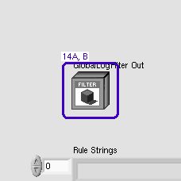 |

|
- LabVIEW Object "GlobalLogFilter Out" - data value : changed from "(Communicable State Machine.lvlib:LogFilter.lvclass: {Rules => {Global => {CSM => [], LogType => [], State => [], StateType => []}, CSM => {LogType => [], State => [], StateType => []}, PeriodicLog => {Enable => True, Threshold(#/s) => 2.000E+0, CheckPeriod(s) => 1.000E+0}}, Cache => {Global => {CSM => [], State => []}, CSM => {LogTypeMap => <Variant\n: Empty>, StateMap => <Variant\n: Empty>, StateTypeMap => <Variant\n: Empty>}}})" to "(Communicable State Machine.lvlib:LogFilter.lvclass: {Rules => {Global => {CSM => [], LogType => [], State => [], StateType => [], Broadcast => [], UserLog => []}, CSM => {LogType => [], State => [], StateType => [], Broadcast => [], UserLog => []}, PeriodicMessageFilter => {Enable => True, Threshold(#/s) => 2.000E+0, CheckPeriod(s) => 1.000E+0}}, Cache => {Global => {CSM(lower) => [], State(lower) => [], Broadcast(lower) => [], UserLog(lower) => []}, CSM => {LogTypeMap => <Variant\n: Empty>, StateMap => <Variant\n: Empty>, StateTypeMap => <Variant\n: Empty>, BroadcastMap => <Variant\n: Empty>, UserLogMap => <Variant\n: Empty>}}})"
- LabVIEW Object "GlobalLogFilter Out" - default data value : changed from "(Communicable State Machine.lvlib:LogFilter.lvclass: {Rules => {Global => {CSM => [], LogType => [], State => [], StateType => []}, CSM => {LogType => [], State => [], StateType => []}, PeriodicLog => {Enable => True, Threshold(#/s) => 2.000E+0, CheckPeriod(s) => 1.000E+0}}, Cache => {Global => {CSM => [], State => []}, CSM => {LogTypeMap => <Variant\n: Empty>, StateMap => <Variant\n: Empty>, StateTypeMap => <Variant\n: Empty>}}})" to "(Communicable State Machine.lvlib:LogFilter.lvclass: {Rules => {Global => {CSM => [], LogType => [], State => [], StateType => [], Broadcast => [], UserLog => []}, CSM => {LogType => [], State => [], StateType => [], Broadcast => [], UserLog => []}, PeriodicMessageFilter => {Enable => True, Threshold(#/s) => 2.000E+0, CheckPeriod(s) => 1.000E+0}}, Cache => {Global => {CSM(lower) => [], State(lower) => [], Broadcast(lower) => [], UserLog(lower) => []}, CSM => {LogTypeMap => <Variant\n: Empty>, StateMap => <Variant\n: Empty>, StateTypeMap => <Variant\n: Empty>, BroadcastMap => <Variant\n: Empty>, UserLogMap => <Variant\n: Empty>}}})"
15. Front Panel - Array
| /workspace-base/src/user.lib/_NEVSTOP/Communicable State Machine(CSM)/addons/Logger/_Support/List Rules as Strings.vi | /workspace/src/user.lib/_NEVSTOP/Communicable State Machine(CSM)/addons/Logger/_Support/List Rules as Strings.vi | |
|
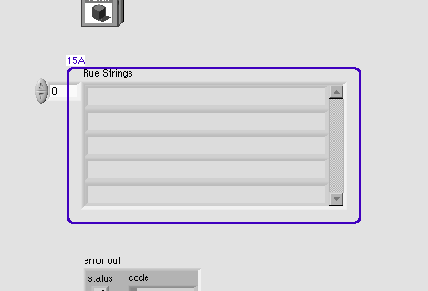 |

|
- String "String" - moved : changed from "(268,160)" to "(268,214)"